3. Installing a Virtual Machine¶
A Virtual Machine allows for the creation of a development environment within any host computer, and provides a way to quickly start developing without the need for specialized equipment.
VirtualBox is a free application that can quickly and easily create Virtual Machines capable of running most operating systems. This is a guide for setting up a Virtual Machine for GMT SWC development.
Note
Needless to say, there are situations where a Virtual Machine should not be used, for example when the system requires physical interfaces that cannot be easily simulated in a Virtual Environment.
3.1. Download Virtual Box¶
The latest versions of VirtualBox can be found here: https://www.virtualbox.org/wiki/Downloads
Download and install the correct version, depending on which host machine will be used. For the purposes of this guide, we will be installing VirtualBox version 5.1.20, for use on OS X.
3.2. Install VirtualBox¶

Click on the VirtualBox.pkg image to install.

Click Continue to install using defaults.

3.3. Create a Virtual Machine¶
Run the application
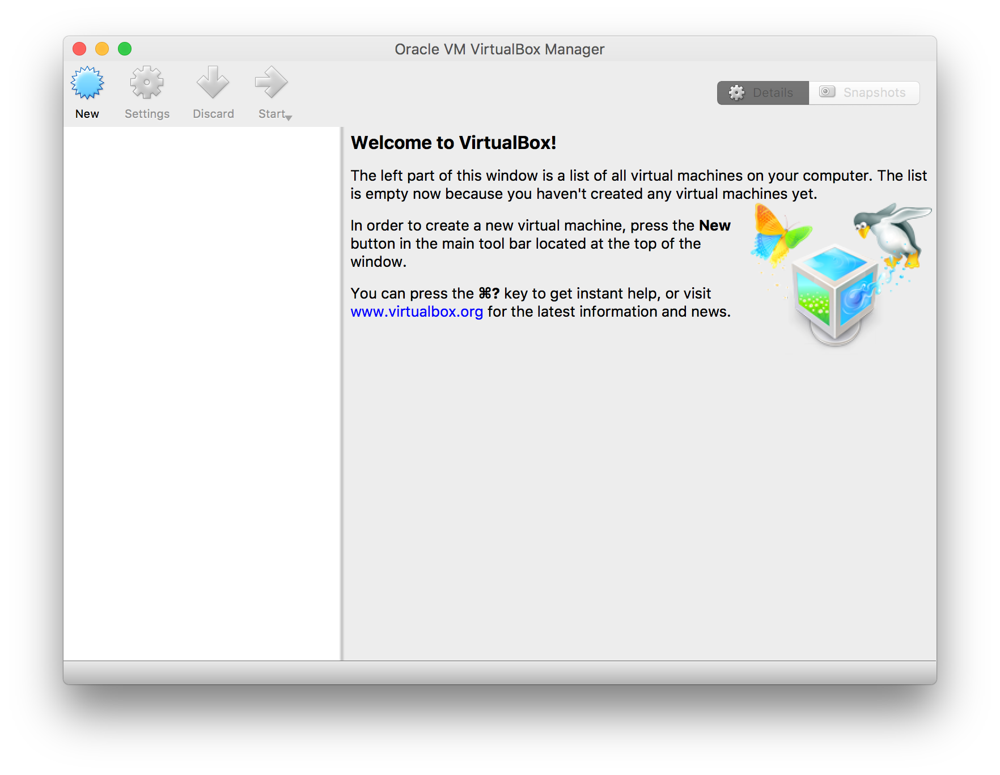{kind=link}
Select New

Choose a descriptive Name for the Virtual Machine and select the Type as Linux and the Version as Red Hat (64-bit).
Select Continue to proceed.
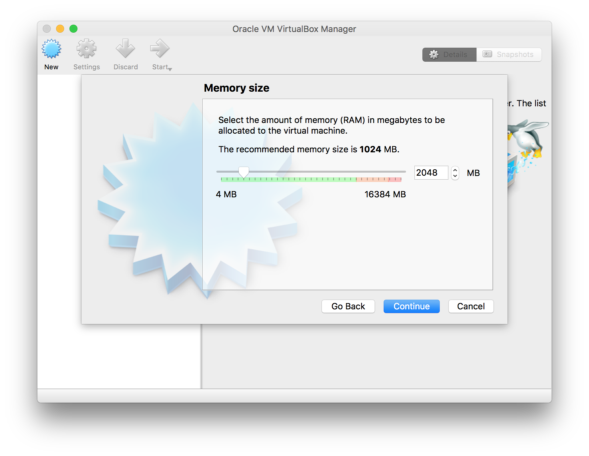{kind=link}
The amount of memory allocated to the Virtual Machine can be varied depending on how much memory is available to the host machine and how heavily the Virtual Machine will be utilized. At this stage, 2 GB is more than sufficient. It can be changed after the Virtual Machine has been set up, if necessary.
Select Continue to proceed.
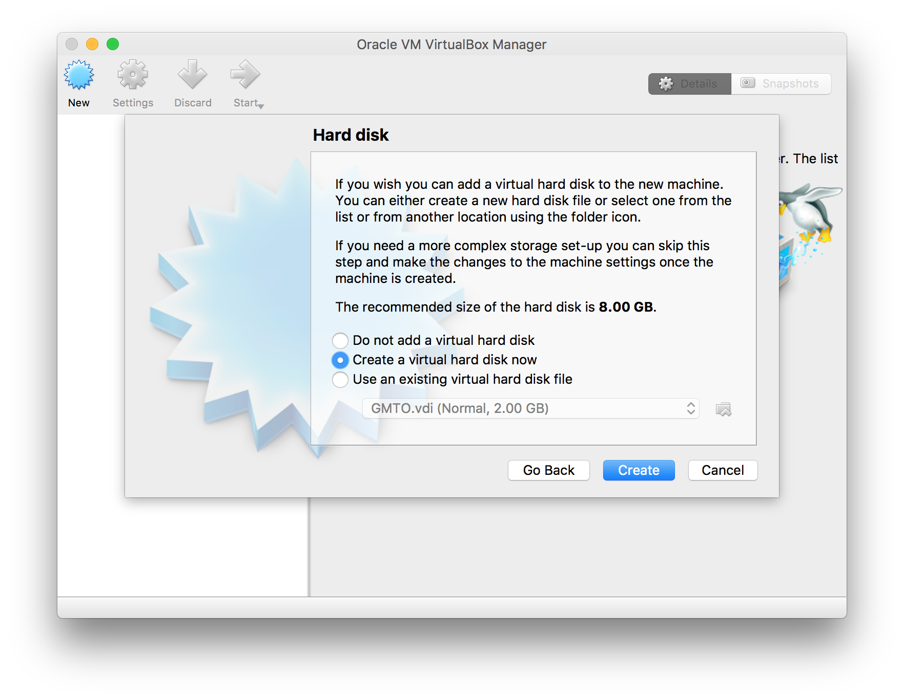{kind=link}
Select Create a virtual hard disk now, to set up a hard drive. This will be a file on the host machine that can dynamically resize based on demand, up to a specified maximum value.
Select Create to proceed.
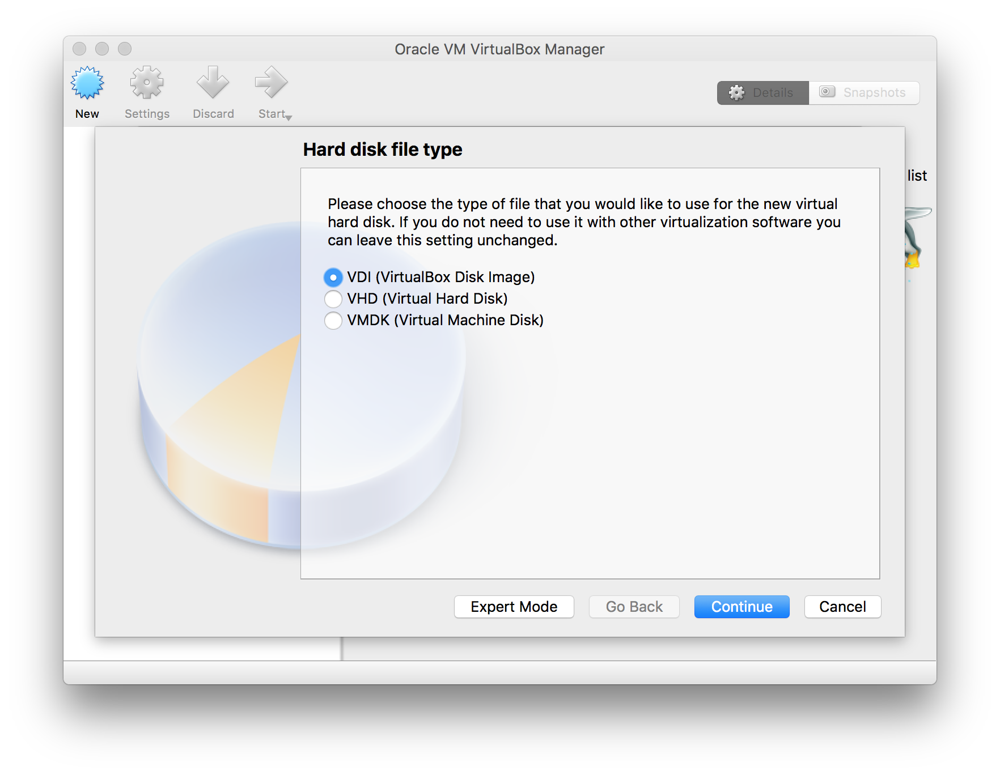{kind=link}
Select the default, VDI (VirtualBox Disk Image), and then click Continue to proceed.

Select the default, Dynamically allocated, and then click Continue to proceed.

The amount of disk space allocated to the Virtual Machine can be varied depending on how much disk space is available to the host machine and the hardware requirements of the Virtual Machine. The host machine will only be impacted by the actual size of the virtual machine file system because the virtual drive space is allocated dynamically. At this stage 20 GB is sufficient. The minimum capacity for the SWC development machine is 5 GB.
Select Create to proceed.
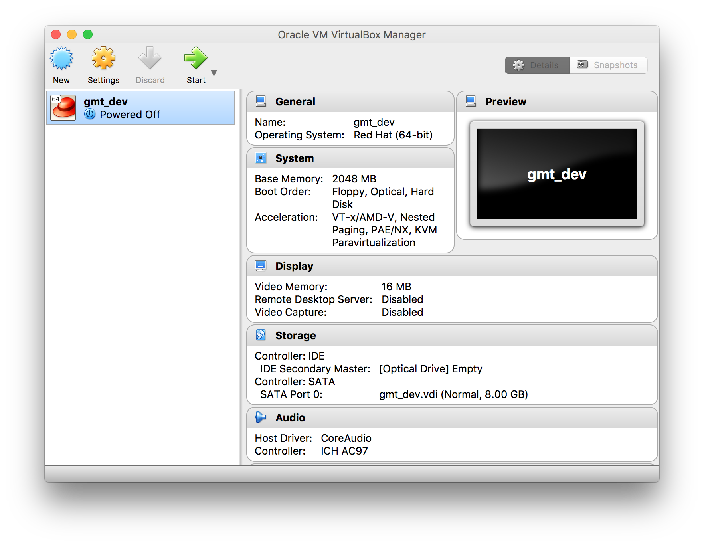{kind=link}
The Virtual Machine is now set up and ready to use. The system properties of the VM can be changed whenever it is turned off by selecting the VM and clicking on Settings.
3.4. Configure Network Settings¶
To allow the virtual machine to access the internet, we need to bridge the VM’s network adapter to the host machine’s network adapter.
Select the VM and click on Settings, then select the Network icon on the top row.
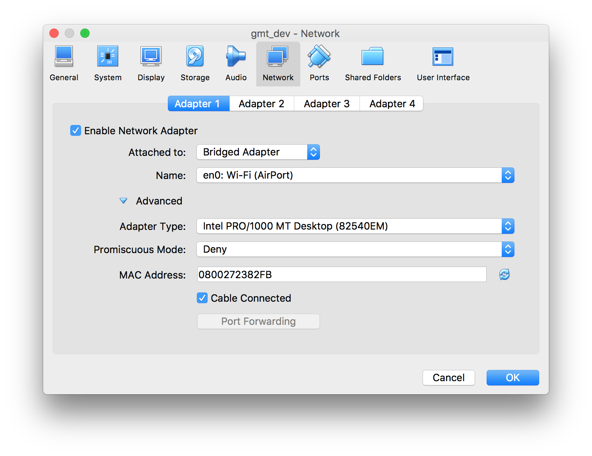{kind=link}
Enable Network Adapter 1 and set it to be attached to Bridged Adapter with Name the same as the network adapter used by the host machine to connect to the internet. In this case, it’s the wireless adapter en0. The settings under Advanced can remain on defaults.
Select OK to save settings and close the dialog.
3.5. Download the iso image¶
Before running the virtual machine for the first time, download the iso image that will be used to install the operating system and other critical packages.
The iso file can be found here: standalone.iso Download this file to the host machine.
For alternative instructions on how to download and verify this file, go to Installation
3.6. Run the Virtual Machine¶
Double-click the VM in the left pane or select the VM and click “Start”.

Browse to the standalone.iso file downloaded before and click Start. This will mount the iso into a Virtual Optical Drive and select it as the boot device.
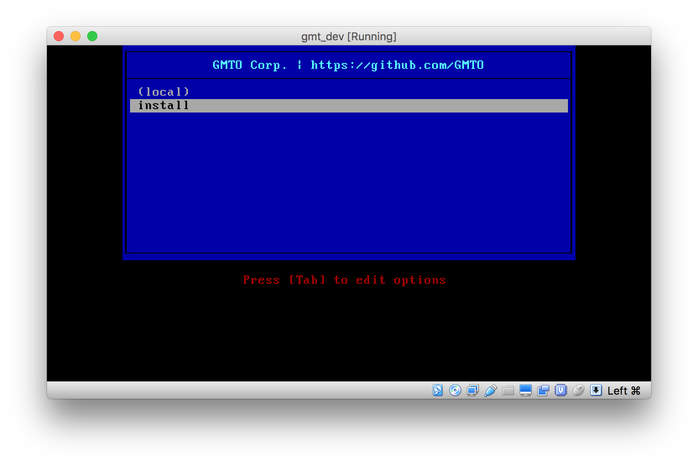{kind=link}
Press down and select install to install the GMTO operating system.
Note
At this point it is useful to note that when you click on the Virtual Machine
window, the keyboard and mouse is automatically captured for use by the guest.
The Host-key, by default Left Command on OS X, will release the mouse and keyboard
for use by the host. The status is shown by the mouse and arrow icons on the
bottom-right of the screen alongside a reminder of which key has been
configured as the host key.
To change to host key, select VirtualBox VM -> Preferences from the application control bar. Select the Input tab and edit the value next to the Host Key Combination field.

Wait for the installation to complete.
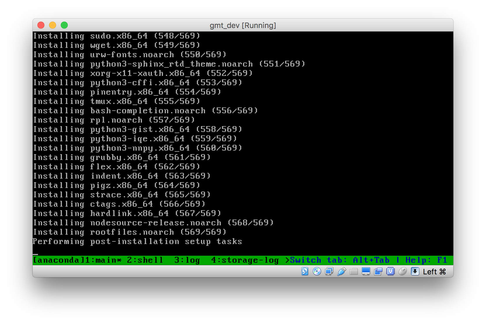{kind=link}
The system will perform all the necessary installation steps without any user input.
When the installation completes and the system has rebooted, the following will be shown:

On the application control bar, select Devices -> Optical Drives -> Remove disk from virtual drive
Reboot the virtual machine by closing the window and starting it again. The system will now boot off its own hard drive instead of the installation disk.

Select the appropriate kernel to boot from. For normal use or administration, the most recent kernel can be selected (Fedora 4.2.3-300.fc23.x86_64). For the real-time kernel, ensure that the rt kernel is selected.
Log in with the default user name and password.

3.7. Upgrade the Packages¶
Type
$ sudo dnf upgrade -x kernel* -y gmt*
to upgrade all gmt packages.
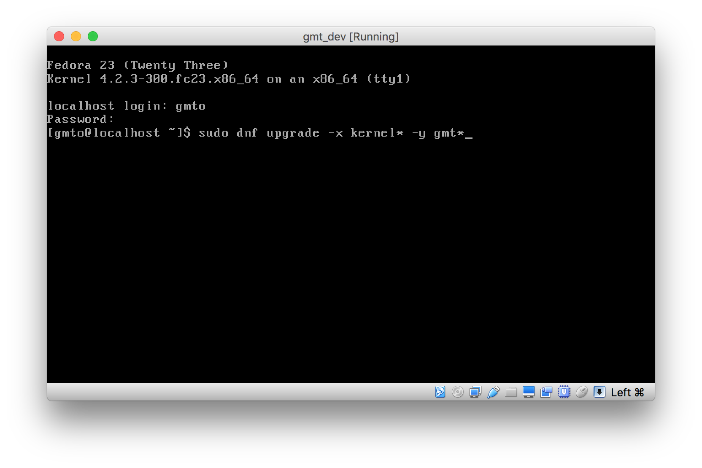 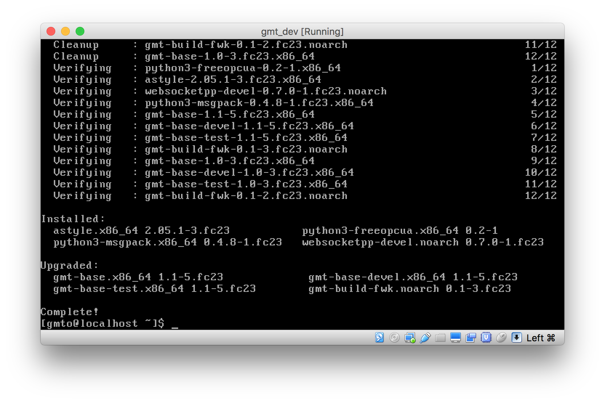{kind=link}
{kind=link}
The system is now ready to use for development.
3.8. Helpful Tips using VirtualBox¶
Multiple Terminals
By default, the virtual machine will start the terminal in tty1.
To switch to other terminals use fn-alt-<Fkey>.
| tty1 | fn-alt-F1 |
| tty2 | fn-alt-F2 |
| tty3 | fn-alt-F3 |
| etc. |
Multiple terminals can be used at the same time.
Note
Environment variables that are temporarily set using the export command will only be set on the current terminal. If there are multiple terminals open, either export the variable individually on all terminals or permanently set the environment variables in the appropriate bash configuration files.
Scrolling
To scroll up in the terminal, use fn-shift-<up arrow> and
fn-shift-<down arrow>.
3.9. VirtualBox Guest Additions (Optional)¶
It’s often useful to be able to share files and folders between the host machine and the virtual machine. To enable this functionality, VirtualBox requires Guest Additions to be installed. This process is optional.
First, we need to update the kernel and existing packages
$ sudo yum update
Log out and shut down the virtual machine. Restart the virtual machine and boot with the latest kernel (for example Fedora 4.8.13-100.fc23.x86_64)
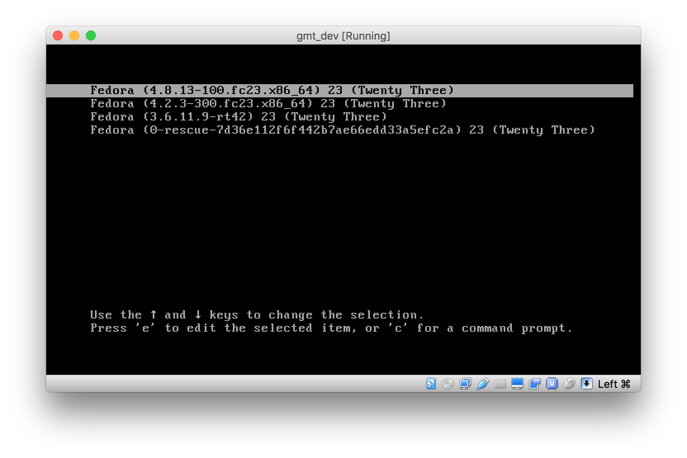{kind=link}
Install additional packages
$ sudo yum install bzip2 $ sudo yum install kernel-devel
With the Virtual Machine running, select Devices -> Insert Guest Additions CD Image... on the application control bar.
Now, find the device ID assigned to the optical drive containing the Guest Additions CD image.
$ blkid

In this case, the device ID is /dev/sr0.
Create a folder under /media and use it to mount the CD rom.
$ sudo mkdir /media/cd $ sudo mount /dev/sr0 /media/cd
Install VirtualBox Guest Additions on the guest machine:
$ cd /media/cd $ sudo ./VBoxLinuxAdditions.run install

Create a shared folder on the host.
Select Devices -> Shared Folders -> Shared Folder Settings...
Click the Add icon on the right-hand side, select the Folder to use on the host machine and give it a name.
Select “Auto-mount” to automatically link the folders at start-up and “Make Permanent” to create a machine folder and not a temporary folder.
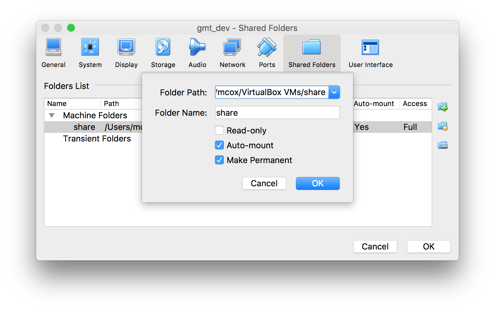{kind=link}
Click OK to save the settings.
Restart the Virtual Machine. The shared folder will be mounted at /media/sf_share.
For easy folder access, add the current user to the vboxsf group:
$ sudo usermod -aG vboxsf gmto
You may need to log out and in again for the changes to take effect.
If you’d like to mount the folder manually, ensure that the “Auto-mount”
setting is not selected. Then, create a folder in the virtual machine to use,
for example ~/share.
$ cd ~ $ mkdir share $ sudo mount -t vboxsf share ~/share
Where “share” is the name given to the folder during configuration, potentially matching the folder name on the host and “~/share” is the location of the folder on the virtual machine.
In this case, the gmto user does not need to be added to the vboxsf group to allow full access to the folder.
3.10. Troubleshooting¶
3.10.1. Logging Service¶
If there is an issue starting the logging service, check that the mongo DB process is running and try to restart the service.
$ systemctl status -l mongod $ sudo service mongod restart
If the problem persists, check the log file for information on why the service is unable to start
$ sudo less /var/log/mongodb/mongod.log
If, for example, the error Insufficient free space for journal files is shown in the log, it can be fixed by editing the mongod configuration file to set smallfiles = true. This may be the case if a smaller hard drive size was selected for a virtual machine.
$ sudo vim /etc/mongod.conf
Restart the service and check the status again.
$ sudo service mongod restart $ systemctl status -l mongod